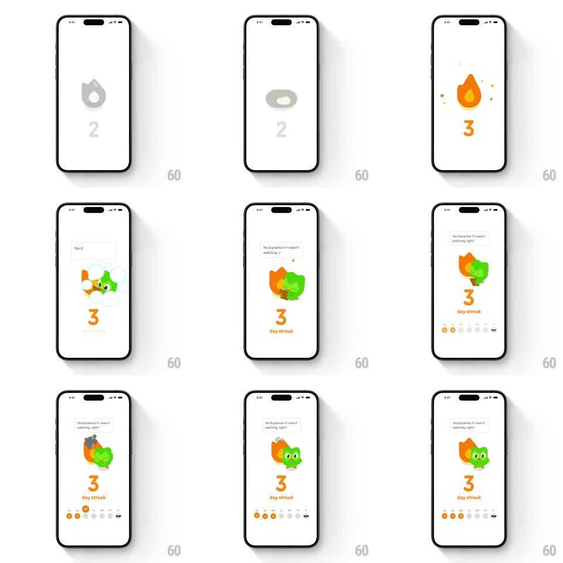

Media
Frame-by-frame

Rebuild this animation 1:1: Duolingo's streak-milestone screen - the gray flame icon over the old count ignites: the numeral flips 2 -> 3 as the flame turns orange with sparks, the owl appears hugging the flaming streak with a sassy speech bubble, and the week dots fill in for the completed days.

Rebuild this animation 1:1: Duolingo's streak-milestone screen - the gray flame icon over the old count ignites: the numeral flips 2 -> 3 as the flame turns orange with sparks, the owl appears hugging the flaming streak with a sassy speech bubble, and the week dots fill in for the completed days.
## Integration
Integration: stack-agnostic spec - springs given as stiffness/damping, timed motions as duration + curve; map every value to your framework and animation library of choice.
## Scene
White screen: flame glyph above a huge numeral, then "day streak" label, a row of weekday dots (M-S), owl hugging the flame with a speech bubble ("You'd practice if I wasn't watching, right?").
## Motion spec
Pattern: ignition sequence, ~2s.
- Start: gray flame + gray numeral (the un-earned state).
- Ignition: flame flashes and fills orange with 4-6 spark particles (300ms); the numeral flips to the new value (rotateX 90 -> 0, 300ms) and turns orange.
- The owl pops in hugging the flame from behind (scale 0.6 -> 1, spring ~350/16, 300ms) while the speech bubble types/pops in (200ms).
- Week dots: completed days fill orange left to right (80ms stagger, scale 0.5 -> 1 pops), remaining days stay gray outlines.
- The flame keeps a gentle flicker (scaleY 1 -> 1.06 -> 1, 600ms loop).
## Calibration
- Ignition is a flash, not a fade - the color snap is the dopamine.
- The owl hug overlaps the flame; it holds the streak, not floats near it.
## Reduced motion
Flame and numeral set instantly; dots fill without pops.
## Don't miss
- The bubble's teasing copy is the personality - keep it.
- The numeral and flame turn orange together; a staggered color change reads as two events.